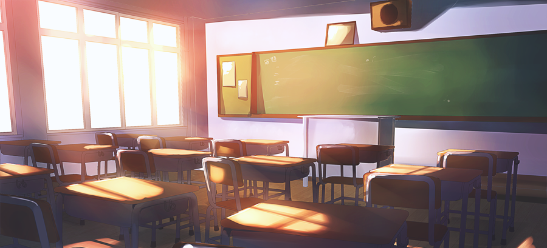

Biografía Personal
Soy Mario Alberto Lujan Llanas, nací en Chihuahua, Chihuahua, el 25 de Mayo de 1994, hijo de Patricia Llanas y Mario Lujan, hermano de Enrique Lujan Llanas.
Scout desde los 11 años en el Grupo 8-Chihuahua.
Terminé la primaria Jesus Orozco mendoza en el año 2006, terminé la secundaria federal #2 en el 2009, el bachillerato terminado hasta el 2012 y actualmente estudio en la UACH Facultad de ingeniería, carreara de Software, entrando el año 2012.
